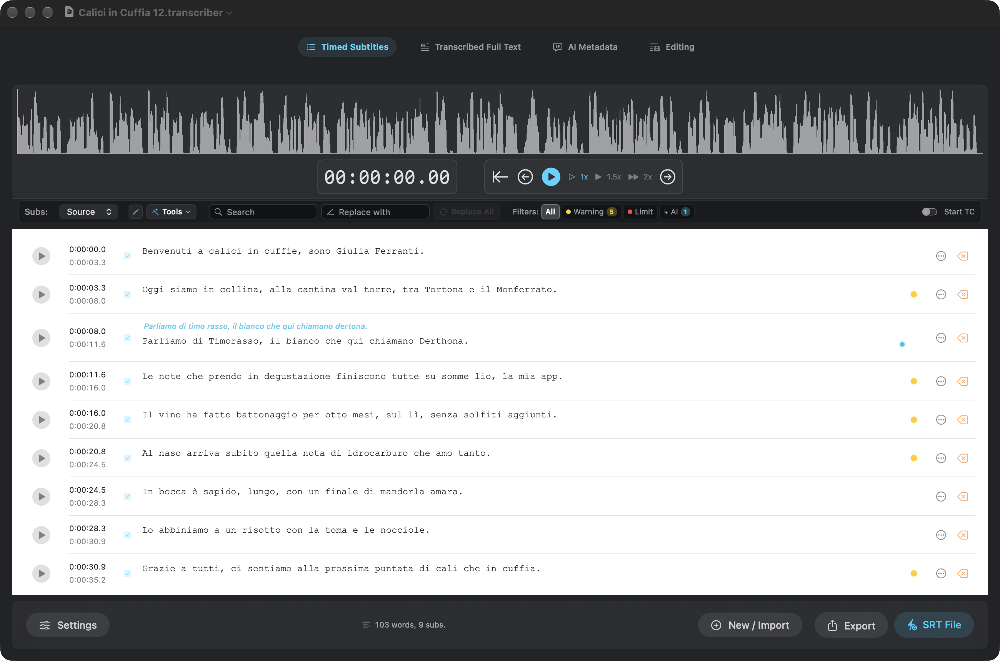
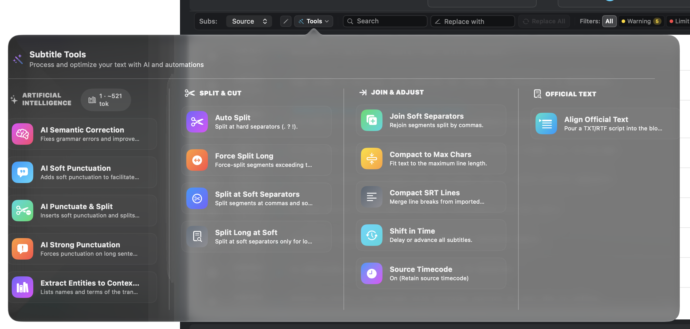
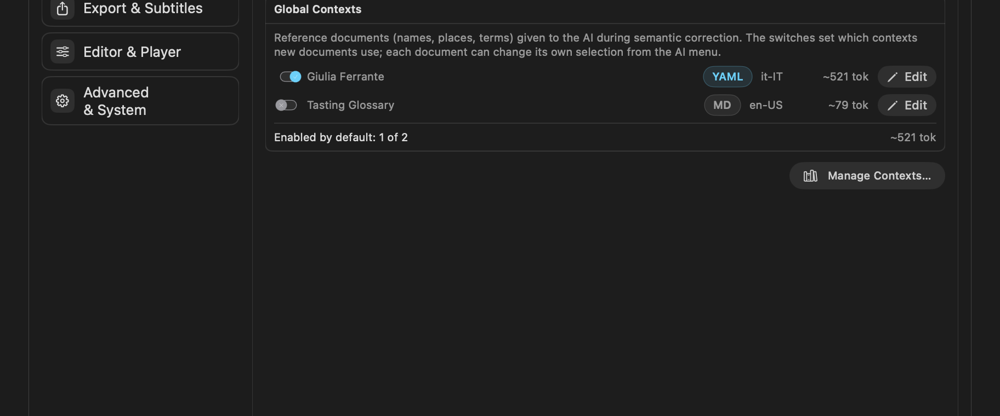
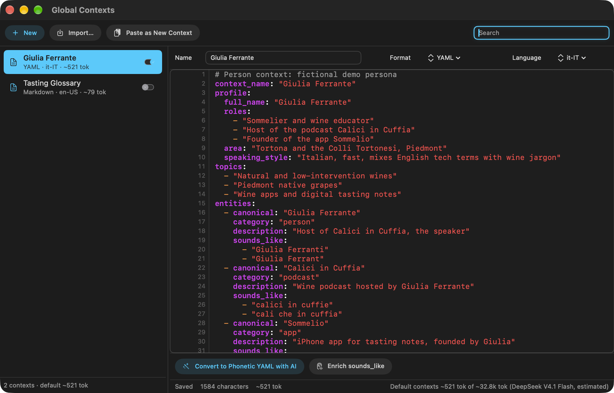
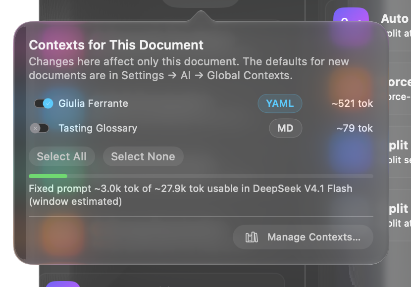
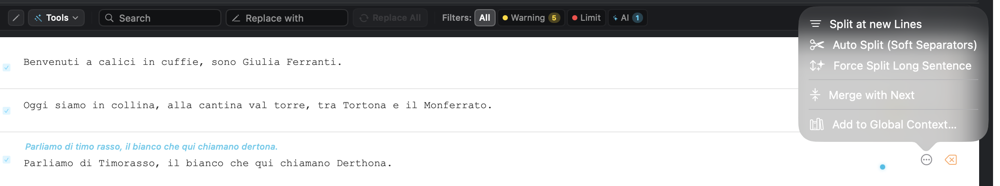

What Global Contexts Are
Speech recognition gets ordinary words right and proper nouns wrong. A podcast called Calici in Cuffia becomes “calici in cuffie”, an app called Sommelio becomes “somme lio”, a grape called Timorasso becomes “timo rasso”.
A Global Context is a reference document you keep in Transcriber: the names, brands, places and terms that come up in your recordings, with their correct spelling and the ways they tend to be misheard. During AI Semantic Correction the enabled contexts are sent to the model together with the transcript, so the AI knows that “cantina val torre” is the winery Cantina Valtorre.
Contexts are a library shared by all your documents. Each document chooses which contexts it uses, so a wine podcast and a tech interview can each get their own vocabulary.

Quick Start
- Open Settings → AI & Translation → Global Contexts and click Manage Contexts….
- Click New, Import… or Paste as New Context. A YAML list of entities works best (see The YAML Format), but plain text, Markdown and JSON are accepted too.
- Turn the switch on next to the context: it will be used by default in new documents.
- In a document, open Tools: the badge next to the AI section shows how many contexts are active and their size in tokens. Click it to change the selection for this document.
- Run AI Semantic Correction as usual.

The Context Library
Settings pane
The Global Contexts tab in Settings lists every context with its format, language and size. The switch sets whether a context is enabled by default for new documents. Existing documents keep their own selection.

Manager window
The manager is where you create and edit contexts.

| Control | What it does |
|---|---|
| New | Creates an empty YAML context. |
| Import… | Adds files (.yaml, .json, .md, .txt). The format is detected from the content. |
| Paste as New Context | Creates a context from the clipboard: the quickest way to bring in a YAML produced by ChatGPT or Gemini. |
| Sidebar switch | Enabled by default for new documents. |
| Name, Format, Language | Display name, how the text is read, and the language of the names (used to judge plausible mishearings). |
| Convert to Phonetic YAML with AI | Turns a free-form context (notes, a bio, a glossary) into the YAML entity format. |
| Enrich sounds_like | Asks the AI to add more likely mishearings to each entity, keeping what is already there. |
| Status bar | Save state, characters and tokens of this context, and the total of the default contexts against the usable window of the current AI model. |
The YAML Format
Any text is accepted, but the AI works best with a list of entities. Each one says what is correct and what the transcription produced instead.
context_name: "Giulia Ferrante"
entities:
- canonical: "Calici in Cuffia" # correct spelling
category: "podcast" # person, company, product, place…
description: "Wine podcast hosted by Giulia Ferrante"
sounds_like: # how speech recognition writes it
- "calici in cuffie"
- "cali che in cuffia"
- canonical: "Timorasso"
category: "grape"
description: "White grape native to the Colli Tortonesi"
sounds_like:
- "timo rasso"
- "timorazzo"| Key | Meaning |
|---|---|
context_name | Name of the context. |
entities | The list the AI tools read and merge into. |
canonical | The correct form, exactly as it should appear in the subtitles. |
category | Free label. It helps the AI judge whether a replacement fits the sentence. |
description | One line of meaning: who or what it is. |
sounds_like | Wrong spellings the recognizer actually produces: split or merged words, wrong endings, homophones. |
Extra top-level sections such as profile or topics are allowed and are sent to the AI as background. The merge and enrich tools only change entities, so your other sections are kept as written.
Contexts per Document
Each document stores its own list of active contexts. A new document starts with the contexts enabled in Settings. Click the badge in Tools to change it.

Watch the meter. Contexts are sent with every correction chunk: the bigger they are, the less room is left for transcript text in each request. When contexts take a large share of the window, Transcriber sends smaller chunks of transcript, which means more requests.
Growing a Context
Contexts get better as you correct transcripts. Two tools turn your corrections into entities.
Add to Global Context… (one segment)
After you fix a name by hand, or after the AI fixes one, open the segment's … menu and choose Add to Global Context…. Transcriber compares the segment with its earlier text and proposes the changed words as rows: correct spelling, sounds like, category. Check the rows to keep, pick the destination context (or a new one) and click Add.

If the canonical already exists in the destination, the new sounds_like values are merged into it. Otherwise the entity is appended.
Extract Entities to Context… (whole transcript)
In Tools → AI, Extract Entities to Context… opens a window where the AI lists the people, places, brands and terms of the current transcript. Review the rows, switch off the ones you do not want, choose Into (an existing YAML context or a new one) and click Add to Context. Run it on a transcript that has already been corrected, so the canonical spellings are right.
Generating a Person Context
For a recurring speaker, such as a podcast host or a guest, the fastest start is to let a web-search-capable assistant (ChatGPT, Gemini, Perplexity, Claude…) build the context. It looks up everything public about the person, then writes the YAML with both meaning (profile, topics) and vocabulary (entities).
The prompt
Copy the prompt, replace the {{…}} placeholders, and paste it into an assistant with web search turned on. Fields you do not know can be left empty: the assistant will ask.
I am building a reference document for an AI that corrects automatic
transcripts of podcasts and interviews. Speech recognition gets ordinary words
right but mangles proper nouns: people, companies, brands, products, services,
places, events, technical terms. The document tells the correcting AI what the
right names are, what they mean, and how they tend to be misheard.
SUBJECT
- Name: {{FULL NAME}}
- Spoken language of the recordings: {{LANGUAGE, e.g. Italian}}
- What I already know (role, company, city, links, social handles): {{NOTES}}
- Kind of recordings: {{e.g. my own podcast / interviews I give / talks}}
BEFORE YOU START
If anything is unclear (for example several people share this name), ask me
questions one at a time, numbered as "Question N of about T". When a question
has two or more possible answers, list them all so I can pick one. Start the
research only when everything is clear.
RESEARCH
Search the web broadly and in depth: official sites, LinkedIn and social
profiles, interviews, podcasts and their episode lists, press, company
registries, app stores, conference programmes, books and publications.
Collect every proper noun connected to the subject: companies and roles
(current and past), brands, products and services, apps and software,
podcasts, shows and channels, frequent collaborators and guests, places,
events, awards, and the jargon of their field. Prefer names the subject is
likely to SAY OUT LOUD. Do not invent anything: leave out what you cannot
verify, or mark it "(unverified)" in its description.
OUTPUT
Reply with ONE YAML code block and nothing else, with this structure:
context_name: "{{FULL NAME}}"
profile:
full_name: ""
also_known_as: [] # nicknames, handles, stage names
roles: []
organisations: [] # current and past, with role
area: ""
speaking_style: "" # language mix, accent, habits that affect transcription
topics: [] # what they usually talk about
timeline: [] # short dated milestones, only if useful
sources: [] # URLs you relied on
entities:
- canonical: "" # exact correct spelling and capitalisation
category: "" # person | company | brand | product | service | app |
# podcast | show | place | event | term | ...
description: "" # one line: what it is and how it relates to the subject
sounds_like: [] # see the rules below
RULES FOR sounds_like
- Write 2 to 6 plausible MIS-TRANSCRIPTIONS that a {{LANGUAGE}} speech
recognizer would produce when the name is spoken by a {{LANGUAGE}} speaker:
words split or merged ("somme lio"), letters dropped or doubled, endings
changed, foreign names spelled the way they sound in {{LANGUAGE}}, English
names pronounced the {{LANGUAGE}} way, homophones made of common words.
- Never repeat the canonical form, and do not list mere case changes.
- For acronyms, include the spelled-out letters as they would be written in
{{LANGUAGE}} (for example "a i" or "ei ai" for "AI").
LIMITS
- Put the subject themself first in entities, then the most frequent names.
- Keep profile, topics and timeline short (they cost tokens on every request).
Aim for at most about 80 entities. If there are more, keep the ones most
likely to be spoken.
- Use plain double-quoted strings and two-space indentation. No tabs, no
anchors, no comments outside the template.What changed from a plain “find everything about X” prompt: it asks numbered clarifying questions first (homonyms are common), it gives the exact schema Transcriber reads, it explains how to write sounds_like for the recordings' language, it forbids invented facts, and it caps the size so the context stays cheap on every AI request.
The demo persona used in this guide's screenshots was made this way (the person is fictional):
context_name: "Giulia Ferrante"
profile:
full_name: "Giulia Ferrante"
roles:
- "Sommelier and wine educator"
- "Host of the podcast Calici in Cuffia"
- "Founder of the app Sommelio"
area: "Tortona and the Colli Tortonesi, Piedmont"
speaking_style: "Italian, fast, mixes English tech terms with wine jargon"
topics:
- "Natural and low-intervention wines"
- "Piedmont native grapes"
- "Wine apps and digital tasting notes"
entities:
- canonical: "Giulia Ferrante"
category: "person"
description: "Host of Calici in Cuffia, the speaker"
sounds_like: ["Giulia Ferranti", "Giulia Ferrant"]
- canonical: "Sommelio"
category: "app"
description: "iPhone app for tasting notes, founded by Giulia"
sounds_like: ["somme lio", "so melio"]
- canonical: "Cantina Valtorre"
category: "winery"
description: "Family winery in the Colli Tortonesi"
sounds_like: ["cantina val torre", "cantina valtore"]Import and enhance
- Copy the YAML from the assistant's reply (only the code block).
- In the manager, click Paste as New Context. Check that Format reads YAML and set Language to the language of the recordings.
- Read it once. Delete wrong or unverifiable entries; a wrong entity can make the AI “correct” a word that was right.
- Click Enrich sounds_like to add more mishearings. Run it again after a few episodes if names still slip through.
- Switch it on in Settings (default for new documents) or only in the documents where that person speaks.
- Over time, feed it real errors with Add to Global Context… and Extract Entities to Context…: errors seen in your own transcripts are the most valuable
sounds_likeof all.
The same prompt works for a company, a show or a topic: replace the SUBJECT block and keep the rest.
Tips and Limits
- Many small contexts beat one huge one. Keep one per person, show or field, and enable only those that fit the recording.
- Size matters. Every enabled context is sent with every chunk. Check the meter in the document popover, especially with small-window models. If the contexts would not fit the model's window at all, the correction does not start.
- Canonical spelling is law. The AI copies
canonicalverbatim, capitals and accents included. - Short words are risky. A
sounds_likethat is also a common word (“torre”, “lì”) can trigger wrong replacements. Prefer multi-word forms (“cantina val torre”). - Private data stays local until a correction runs. Then the enabled contexts go to the AI provider configured in Settings, like the transcript itself.